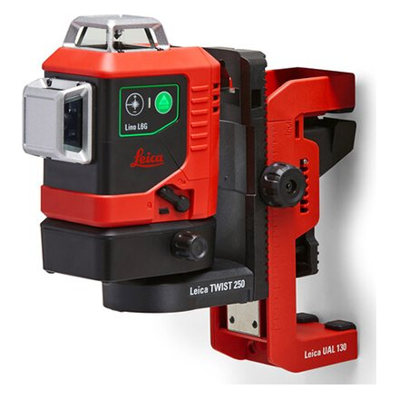
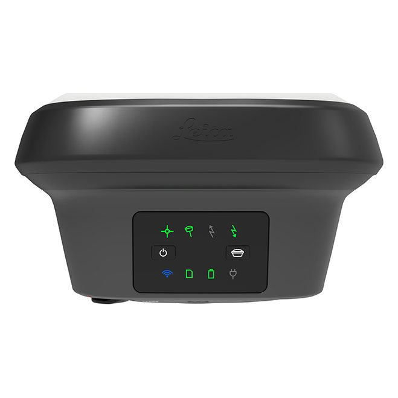
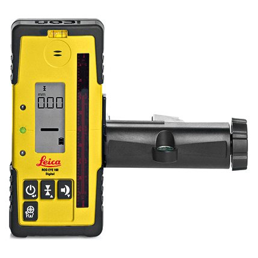
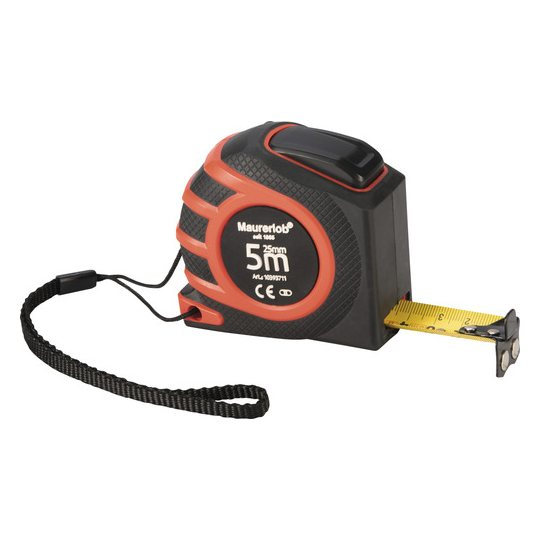
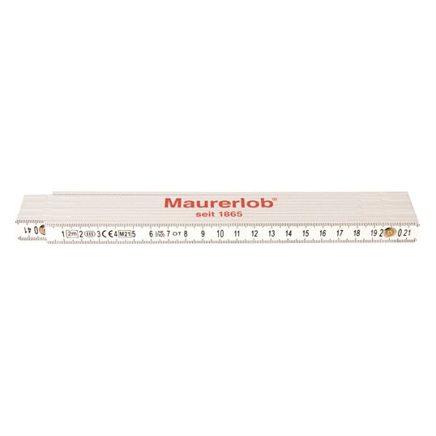
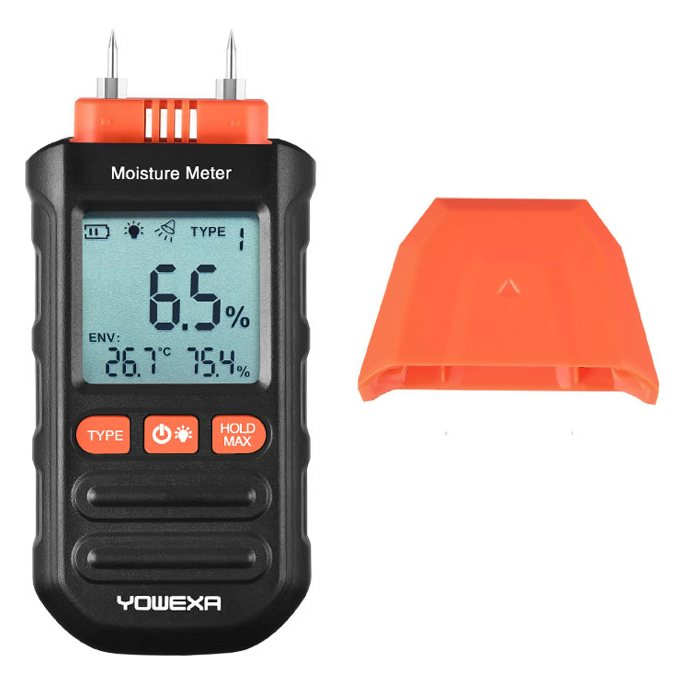

图片仅供参考，展示产品类型。
测量与检测
免棱镜全站仪 （500–600米）
集测角和测距于一体的免棱镜全站仪，用于放样、现状测绘和工程量测量。
免棱镜全站仪集测角与测距于一体，用于拆除和室内拆除作业中的放样、现状测绘和工程量测量：立面点、天花板高度和切割边缘无需棱镜、无需脚手架即可采集。专业设备配有双轴补偿器、2至5″测角精度、IP66防护等级，以及含放样、自由设站和工程量测量程序的野外软件。在德国，业主和检测机构要求可溯源的校准、符合ISO 17123-5的检验报告以及符合EN 60825-1的激光分类，因为免棱镜测距激光通常达到3R类。建筑物登记等官方测量仍由公职测量师（ÖbVI）负责；自有设备用于内部放样和工程量计算。
技术参数
| 测角精度 | 2″（0.6 mgon）至 5″ |
|---|---|
| 免棱镜测程 | 500–600 m |
| 棱镜测程 | 3,000 m 起（单棱镜） |
| 测距精度 | 2 mm + 2 ppm（棱镜）；3 mm + 2 ppm（免棱镜） |
| 望远镜 | 30x，正像 |
| 补偿器 | 双轴，约 ±4′ |
| 防护等级 | IP66 |
| 激光等级 | 3R |
| 海关编码（HS） | 90152000 |
欧盟标准与法规
ISO 17123-5大地测量仪器现场检验程序——第5部分：全站仪ISO 17123-3现场检验程序——第3部分：经纬仪EN 60825-1激光产品的安全——设备分类和要求TROS Laserstrahlung德国职业安全条例OStrV技术规则（3R类激光）2014/53/EU (RED)无线电设备指令（蓝牙、WLAN、无线电台）EN 61326-1测量、控制和实验室用电气设备——电磁兼容性要求2011/65/EU (RoHS)限制在电气电子设备中使用有害物质
搭配产品


本类别其他产品

32倍自动安平水准仪 （建筑工程用）带空气阻尼补偿器的32倍光学水准仪，用于高程传递、基面验收和开挖深度控制。

自动安平旋转激光水平仪 （双轴、红光）带双轴倾斜、扫描角度和遥控器的自动安平旋转激光水平仪，用于施工现场的标高与坡度放样。

3×360°十二线绿光标线仪 （3D十字激光水平仪）带三个360°激光平面的自动安平标线仪，用于轻钢隔墙、铺砖和安装作业的垂直与水平放线。

激光测距仪 （50–100米, 蓝牙）带倾角传感器和蓝牙的便携式激光测距仪，可快速测量长度、面积和体积。

带倾斜测量的GNSS RTK接收机 （流动站、多星座）集成IMU的紧凑型RTK流动站，无需架设全站仪即可完成放样、地形测量和检核测量。

轻型落锤弯沉仪 （动态平板载荷试验, Evd）便携式落锤设备，用于快速测定基面和承载层的动态变形模量Evd。

旋转激光接收器/探测器 (红绿光,带夹具)手持接收器,可在日光下和远距离捕捉旋转激光束,并以数字方式显示高度位置。

绿光激光可视眼镜 (十字线与旋转激光增强镜)绿色镜片可视眼镜,在明亮环境光下增强绿色激光线的对比度;属于观察辅助,不是激光防护。

铝合金伸缩水准尺 5 m (E 型刻度,带水准泡和袋子)铝合金伸缩水准尺,E 型刻度并带水准泡,拉出长度 5 m,可装入软袋携带。

卷尺 5 米 (欧盟 II 级精度)5 米自动回收卷尺,尼龙涂层钢带、双色刻度,防滑外壳并带腰夹。

折叠尺 (折尺)2 米2 米 10 折折叠尺,抗冲击 ABS 塑料,公制刻度,多种颜色。

针式木材及建材水分仪带针电极的手持数显水分仪，快速测量材料含水率。

手持式激光红外测温仪非接触式手持表面测温仪。

磁性底座数显倾角仪带磁铁的紧凑型角度仪，快速测角度与坡度。

150 mm 不锈钢数显卡尺带LCD的电子卡尺，测外径、内径、深度。

带彩屏手持检查摄像头 （内窥镜）手持设备，细探头摄像头带LED，用于观察空腔。

空气及液体数显压力表带LCD和螺纹接口的电子压力表。

室内数显温湿度计显示温度和湿度的小型室内气候仪。
自动量程数字万用表，CAT III带自动量程的手持万用表，测电压、电流、电阻。